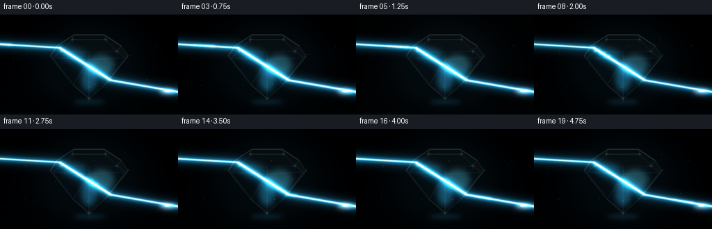
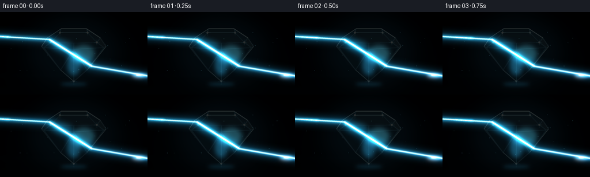
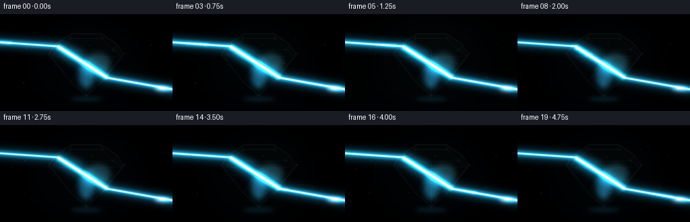
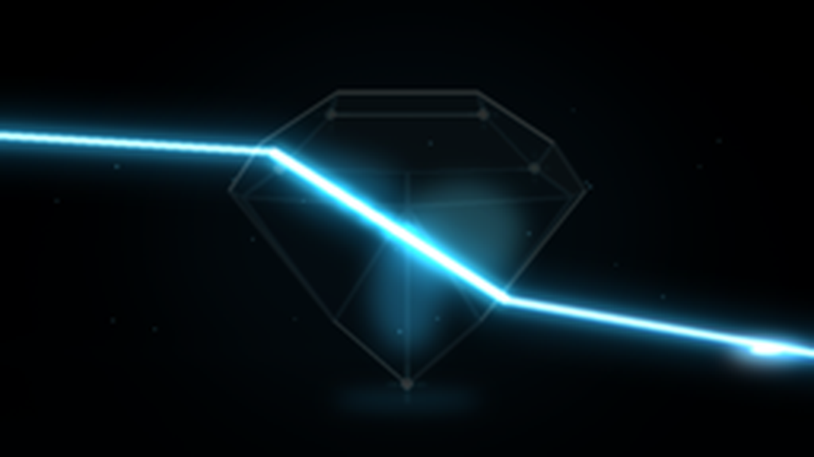
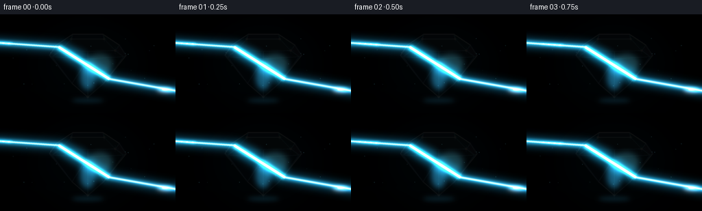

CODING AGENTS AS PIXEL WORLD MODELS
traex/DeepSeek-V4.1-Flash · phygen_089
点击播放 · 原生 RGB 像素
逐轮保存的候选
回放视频、检查图与代码变化。
每份候选均可单独播放。实际图片检查记录在下方工具轨迹中。
候选 01播放与检查图
点击播放 · 原生 RGB 像素


展开代码变化
--- 上一保存版本
+++ 本次保存版本
@@ -0,0 +1,326 @@
+from pathlib import Path
+import math
+
+import numpy as np
+from PIL import Image, ImageDraw, ImageFilter
+
+import artifact_io
+
+
+WIDTH = 256
+HEIGHT = 144
+FRAMES = 20
+FPS = 4.0
+SS = 4
+W = WIDTH * SS
+H = HEIGHT * SS
+
+
+def scaled(points):
+ return [(int(round(x * SS)), int(round(y * SS))) for x, y in points]
+
+
+def additive(canvas, layer, strength=1.0):
+ return canvas + np.asarray(layer, dtype=np.float32) * strength
+
+
+def glow_line(points, width, color, blur):
+ layer = Image.new("RGB", (W, H), (0, 0, 0))
+ draw = ImageDraw.Draw(layer)
+ draw.line(scaled(points), fill=color, width=max(1, int(round(width * SS))), joint="curve")
+ layer = layer.filter(ImageFilter.GaussianBlur(blur * SS))
+ return layer
+
+
+def crisp_line(points, width, color):
+ layer = Image.new("RGB", (W, H), (0, 0, 0))
+ draw = ImageDraw.Draw(layer)
+ draw.line(scaled(points), fill=color, width=max(1, int(round(width * SS))), joint="curve")
+ return layer
+
+
+def radial_glow(cx, cy, rx, ry, color, blur=0.0):
+ layer = Image.new("RGB", (W, H), (0, 0, 0))
+ draw = ImageDraw.Draw(layer)
+ box = [
+ int((cx - rx) * SS),
+ int((cy - ry) * SS),
+ int((cx + rx) * SS),
+ int((cy + ry) * SS),
+ ]
+ draw.ellipse(box, fill=color)
+ if blur:
+ layer = layer.filter(ImageFilter.GaussianBlur(blur * SS))
+ return layer
+
+
+def star_glow(cx, cy, radius, color, blur=0.7):
+ layer = Image.new("RGB", (W, H), (0, 0, 0))
+ draw = ImageDraw.Draw(layer)
+ x, y = cx * SS, cy * SS
+ r = radius * SS
+ draw.line((x - r, y, x + r, y), fill=color, width=max(1, int(SS * 0.8)))
+ draw.line((x, y - r, x, y + r), fill=color, width=max(1, int(SS * 0.8)))
+ layer = layer.filter(ImageFilter.GaussianBlur(blur * SS))
+ return layer
+
+
+def point_on_path(points, u):
+ lengths = []
+ total = 0.0
+ for a, b in zip(points[:-1], points[1:]):
+ length = math.hypot(b[0] - a[0], b[1] - a[1])
+ lengths.append(length)
+ total += length
+ target = max(0.0, min(1.0, u)) * total
+ for (a, b), length in zip(zip(points[:-1], points[1:]), lengths):
+ if target <= length or length == lengths[-1]:
+ q = target / length if length else 0.0
+ return (a[0] + (b[0] - a[0]) * q, a[1] + (b[1] - a[1]) * q)
+ target -= length
+ return points[-1]
+
+
+def background():
+ yy, xx = np.mgrid[0:H, 0:W].astype(np.float32)
+ x = xx / SS
+ y = yy / SS
+ v = np.clip(y / HEIGHT, 0.0, 1.0)
+
+ top = np.array([2.0, 5.0, 11.0], dtype=np.float32)
+ bottom = np.array([6.0, 15.0, 23.0], dtype=np.float32)
+ image = top[None, None, :] * (1.0 - v[..., None]) + bottom[None, None, :] * v[..., None]
+
+ halo = np.exp(-(((x - 128.0) / 91.0) ** 2 + ((y - 65.0) / 67.0) ** 2))
+ image += halo[..., None] * np.array([4.0, 13.0, 19.0], dtype=np.float32)
+
+ table = np.clip((y - 104.0) / 40.0, 0.0, 1.0)
+ image += table[..., None] * np.array([1.2, 5.0, 7.0], dtype=np.float32)
+ image += np.exp(-((y - 111.0) / 4.0) ** 2)[..., None] * np.array([1.0, 4.0, 5.0], dtype=np.float32)
+
+ dx = (x - 128.0) / 145.0
+ dy = (y - 72.0) / 92.0
+ vignette = np.clip(1.0 - 0.48 * (dx * dx + dy * dy), 0.50, 1.0)
+ image *= vignette[..., None]
+
+ # Very fine grain keeps the broad dark areas from looking synthetic.
+ grain = (
+ np.sin(xx * 1.37 + yy * 0.73)
+ + np.sin(xx * 0.41 - yy * 1.91)
+ + np.sin(xx * 2.17 + yy * 1.03)
+ ) / 3.0
+ image += grain[..., None] * 0.65
+ return np.clip(image, 0, 255)
+
+
+OUTER = [
+ (106, 29),
+ (150, 29),
+ (174, 45),
+ (184, 60),
+ (151, 101),
+ (128, 121),
+ (105, 101),
+ (72, 60),
+ (82, 45),
+]
+
+TABLE = [(104, 36), (152, 36), (168, 53), (88, 53)]
+
+FACETS = [
+ # Crown
+ ([(106, 29), (150, 29), (152, 36), (104, 36)], (173, 232, 248, 34)),
+ ([(106, 29), (104, 36), (88, 53), (82, 45)], (83, 183, 224, 38)),
+ ([(150, 29), (174, 45), (168, 53), (152, 36)], (129, 208, 238, 47)),
+ ([(82, 45), (88, 53), (76, 62), (72, 60)], (95, 187, 224, 40)),
+ ([(174, 45), (184, 60), (180, 62), (168, 53)], (191, 231, 247, 50)),
+ ([(88, 53), (128, 54), (128, 65), (76, 62)], (68, 169, 210, 31)),
+ ([(128, 54), (168, 53), (180, 62), (128, 65)], (122, 205, 235, 38)),
+ # Pavilion
+ ([(76, 62), (128, 65), (105, 101)], (111, 203, 232, 45)),
+ ([(76, 62), (105, 101), (128, 121), (128, 65)], (62, 159, 201, 34)),
+ ([(128, 65), (128, 121), (151, 101)], (93, 190, 222, 39)),
+ ([(128, 65), (151, 101), (180, 62)], (153, 220, 242, 48)),
+ ([(180, 62), (151, 101), (128, 121), (128, 65)], (80, 174, 211, 32)),
+]
+
+
+def draw_gem(canvas, frame):
+ phase = 2.0 * math.pi * frame / FRAMES
+ gem = Image.new("RGBA", (W, H), (0, 0, 0, 0))
+ draw = ImageDraw.Draw(gem, "RGBA")
+
+ # Soft blue bloom behind the crystal.
+ bloom = radial_glow(128, 70, 78, 62, (16, 51, 67), blur=15)
+ canvas = additive(canvas, bloom, 0.72 + 0.05 * math.sin(phase))
+
+ # Ground contact shadow.
+ shadow = radial_glow(130, 124, 44, 7, (0, 0, 0), blur=5)
+ canvas *= 1.0 - np.asarray(shadow, dtype=np.float32) / 255.0 * 0.72
+
+ draw.polygon(scaled(OUTER), fill=(91, 193, 225, 23))
+
+ for index, (poly, color) in enumerate(FACETS):
+ shifted = color
+ shimmer = int(4 * math.sin(phase + index * 1.7))
+ shifted = (
+ max(0, min(255, color[0] + shimmer)),
+ max(0, min(255, color[1] + shimmer)),
+ max(0, min(255, color[2] + shimmer)),
+ color[3],
+ )
+ draw.polygon(scaled(poly), fill=shifted)
+
+ draw.polygon(scaled(TABLE), fill=(184, 234, 247, 39))
+
+ # Internal light caught by the girdle and lower facets.
+ for cx, cy, rx, ry, color, amount in [
+ (108, 58, 18, 9, (52, 175, 221), 0.42),
+ (145, 73, 19, 15, (89, 212, 241), 0.36),
+ (128, 91, 11, 19, (36, 139, 186), 0.32),
+ ]:
+ pulse = 0.84 + 0.16 * math.sin(phase * 1.4 + cx * 0.05)
+ internal = radial_glow(cx, cy, rx, ry, color, blur=4)
+ gem = Image.alpha_composite(gem, Image.fromarray(np.dstack([np.asarray(internal), np.full((H, W), 110, np.uint8)])))
+ canvas = additive(canvas, internal, amount * pulse)
+
+ # Facet boundaries.
+ outline_layer = Image.new("RGB", (W, H), (0, 0, 0))
+ outline_draw = ImageDraw.Draw(outline_layer)
+ for poly, _ in FACETS:
+ outline_draw.line(scaled(poly + [poly[0]]), fill=(143, 226, 247), width=max(1, SS))
+ outline_draw.line(scaled(OUTER + [OUTER[0]]), fill=(199, 241, 253), width=max(1, int(1.35 * SS)))
+ outline_layer = outline_layer.filter(ImageFilter.GaussianBlur(0.38 * SS))
+ canvas = additive(canvas, outline_layer, 0.37)
+
+ # Crisp, asymmetric edge glints make the glass read as faceted rather than flat.
+ bright = Image.new("RGB", (W, H), (0, 0, 0))
+ bd = ImageDraw.Draw(bright)
+ for points, width in [
+ ([OUTER[0], OUTER[1], OUTER[2]], 1.25),
+ ([OUTER[7], OUTER[8], OUTER[0]], 0.85),
+ ([OUTER[3], OUTER[4]], 0.65),
+ ([OUTER[5], OUTER[6]], 0.55),
+ ([TABLE[0], TABLE[1]], 0.7),
+ ]:
+ bd.line(scaled(points), fill=(230, 251, 255), width=max(1, int(width * SS)))
+ canvas = additive(canvas, bright.filter(ImageFilter.GaussianBlur(0.18 * SS)), 0.72)
+
+ # Sparkling vertices.
+ sparks = [
+ (104, 36, 5.5, 0.5),
+ (152, 36, 4.5, 2.1),
+ (88, 53, 3.2, 4.2),
+ (168, 53, 4.8, 1.2),
+ (128, 121, 5.8, 3.4),
+ ]
+ for cx, cy, radius, offset in sparks:
+ twinkle = 0.55 + 0.45 * (0.5 + 0.5 * math.sin(phase * 1.3 + offset))
+ canvas = additive(canvas, star_glow(cx, cy, radius, (104, 231, 255), 0.55), 0.50 * twinkle)
+ canvas = additive(canvas, radial_glow(cx, cy, 1.7, 1.7, (245, 255, 255), 0.25), 0.9 * twinkle)
+
+ canvas_img = Image.fromarray(np.clip(canvas, 0, 255).astype(np.uint8)).convert("RGBA")
+ return np.asarray(Image.alpha_composite(canvas_img, gem).convert("RGB"), dtype=np.float32)
+
+
+def draw_beam(canvas, frame):
+ phase = 2.0 * math.pi * frame / FRAMES
+ pulse = 0.92 + 0.08 * math.sin(phase * 1.6)
+ incoming = [(-10, 42.0), (85.5, 47.7)]
+ internal = [(85.5, 47.7), (159.2, 94.4)]
+ outgoing = [(159.2, 94.4), (263, 112.5)]
+
+ # Atmospheric halo around the external beam.
+ for points in (incoming, outgoing):
+ canvas = additive(canvas, glow_line(points, 13, (16, 92, 128), 5.5), 0.64 * pulse)
+ canvas = additive(canvas, glow_line(points, 6.5, (47, 174, 224), 2.2), 0.60 * pulse)
+ canvas = additive(canvas, glow_line(points, 2.2, (201, 247, 255), 0.55), 0.95 * pulse)
+ canvas = additive(canvas, crisp_line(points, 0.75, (245, 255, 255)), 0.95 * pulse)
+
+ # Inside the diamond the beam is broader, cyan, and visibly bent.
+ canvas = additive(canvas, glow_line(internal, 15, (11, 103, 145), 5.0), 0.75 * pulse)
+ canvas = additive(canvas, glow_line(internal, 7, (60, 207, 238), 1.8), 0.76 * pulse)
+ canvas = additive(canvas, glow_line(internal, 2.8, (218, 252, 255), 0.45), 0.98 * pulse)
+
+ # A restrained spectral fan at the edges of the refracted beam.
+ for offset, color, strength in [
+ (-1.2, (255, 71, 104), 0.34),
+ (1.2, (81, 103, 255), 0.40),
+ (0.0, (95, 255, 196), 0.25),
+ ]:
+ a = (internal[0][0], internal[0][1] + offset)
+ b = (internal[1][0], internal[1][1] + offset)
+ canvas = additive(canvas, glow_line([a, b], 1.25, color, 0.55), strength)
+ c = (outgoing[1][0], outgoing[1][1] + offset * 2.1)
+ canvas = additive(canvas, glow_line([b, c], 1.0, color, 0.65), strength * 0.70)
+
+ # Light packets travel through the full optical path.
+ path = incoming + internal[1:] + outgoing[1:]
+ for trail in range(4):
+ u = 0.08 + 0.79 * (frame / (FRAMES - 1)) - trail * 0.028
+ if 0.0 <= u <= 1.0:
+ px, py = point_on_path(path, u)
+ fade = 1.0 - trail * 0.19
+ canvas = additive(canvas, radial_glow(px, py, 5.6, 2.1, (36, 164, 215), 1.2), 0.52 * fade)
+ canvas = additive(canvas, radial_glow(px, py, 1.8, 0.75, (240, 255, 255), 0.28), 0.88 * fade)
+
+ return canvas
+
+
+def draw_caustic(canvas, frame):
+ phase = 2.0 * math.pi * frame / FRAMES
+ breathe = 0.92 + 0.08 * math.sin(phase * 1.8 + 0.4)
+ # The exit beam meets the glossy table in a compact prismatic pool.
+ for cx, color, strength in [
+ (238.0, (255, 67, 89), 0.28),
+ (241.0, (93, 255, 176), 0.30),
+ (244.0, (70, 112, 255), 0.31),
+ ]:
+ canvas = additive(canvas, radial_glow(cx, 111.5, 10.5, 3.1, color, blur=3.3), strength * breathe)
+ canvas = additive(canvas, radial_glow(241, 110.5, 12, 2.3, (91, 205, 239), blur=2.4), 0.42 * breathe)
+ canvas = additive(canvas, radial_glow(241, 110.2, 4.7, 0.9, (239, 255, 255), blur=0.7), 0.95 * breathe)
+
+ # A faint reflected vertical smear under the gem.
+ canvas = additive(canvas, radial_glow(128, 126, 23, 3.2, (33, 123, 161), blur=3.0), 0.23)
+ return canvas
+
+
+def draw_dust(canvas, frame):
+ phase = 2.0 * math.pi * frame / FRAMES
+ rng = np.random.default_rng(89)
+ for i in range(22):
+ base_x = rng.uniform(12, 244)
+ base_y = rng.uniform(34, 108)
+ drift = 1.4 * math.sin(phase + i * 1.71)
+ x = base_x + drift
+ y = base_y + 0.8 * math.cos(phase * 0.8 + i * 0.93)
+ brightness = 0.11 + 0.09 * (0.5 + 0.5 * math.sin(phase * 1.2 + i))
+ radius = 0.30 + 0.32 * ((i * 37) % 11) / 10.0
+ canvas = additive(canvas, radial_glow(x, y, radius, radius, (110, 207, 231), blur=0.18), brightness)
+ return canvas
+
+
+def render(frame):
+ canvas = background()
+ canvas = draw_gem(canvas, frame)
+ canvas = draw_beam(canvas, frame)
+ canvas = draw_caustic(canvas, frame)
+ canvas = draw_dust(canvas, frame)
+
+ # A gentle global breath ties the otherwise layered effects together.
+ phase = 2.0 * math.pi * frame / FRAMES
+ canvas *= 0.985 + 0.015 * math.sin(phase)
+ image = Image.fromarray(np.clip(canvas, 0, 255).astype(np.uint8))
+ image = image.resize((WIDTH, HEIGHT), Image.Resampling.LANCZOS)
+ return np.asarray(image, dtype=np.uint8)
+
+
+def main():
+ case_dir = Path(__file__).resolve().parent
+ frames = np.stack([render(index) for index in range(FRAMES)], axis=0)
+ artifact_io.save(frames, case_dir)
+ print(f"wrote {FRAMES} frames to {case_dir}")
+
+
+if __name__ == "__main__":
+ main()
候选 02播放与检查图
点击播放 · 原生 RGB 像素

展开代码变化
--- 上一保存版本
+++ 本次保存版本
@@ -87,16 +87,16 @@
y = yy / SS
v = np.clip(y / HEIGHT, 0.0, 1.0)
- top = np.array([2.0, 5.0, 11.0], dtype=np.float32)
- bottom = np.array([6.0, 15.0, 23.0], dtype=np.float32)
+ top = np.array([3.0, 7.0, 15.0], dtype=np.float32)
+ bottom = np.array([8.0, 20.0, 30.0], dtype=np.float32)
image = top[None, None, :] * (1.0 - v[..., None]) + bottom[None, None, :] * v[..., None]
halo = np.exp(-(((x - 128.0) / 91.0) ** 2 + ((y - 65.0) / 67.0) ** 2))
- image += halo[..., None] * np.array([4.0, 13.0, 19.0], dtype=np.float32)
+ image += halo[..., None] * np.array([7.0, 21.0, 29.0], dtype=np.float32)
table = np.clip((y - 104.0) / 40.0, 0.0, 1.0)
- image += table[..., None] * np.array([1.2, 5.0, 7.0], dtype=np.float32)
- image += np.exp(-((y - 111.0) / 4.0) ** 2)[..., None] * np.array([1.0, 4.0, 5.0], dtype=np.float32)
+ image += table[..., None] * np.array([2.0, 8.0, 11.0], dtype=np.float32)
+ image += np.exp(-((y - 111.0) / 4.0) ** 2)[..., None] * np.array([2.0, 7.0, 9.0], dtype=np.float32)
dx = (x - 128.0) / 145.0
dy = (y - 72.0) / 92.0
@@ -129,19 +129,19 @@
FACETS = [
# Crown
- ([(106, 29), (150, 29), (152, 36), (104, 36)], (173, 232, 248, 34)),
- ([(106, 29), (104, 36), (88, 53), (82, 45)], (83, 183, 224, 38)),
- ([(150, 29), (174, 45), (168, 53), (152, 36)], (129, 208, 238, 47)),
- ([(82, 45), (88, 53), (76, 62), (72, 60)], (95, 187, 224, 40)),
- ([(174, 45), (184, 60), (180, 62), (168, 53)], (191, 231, 247, 50)),
- ([(88, 53), (128, 54), (128, 65), (76, 62)], (68, 169, 210, 31)),
- ([(128, 54), (168, 53), (180, 62), (128, 65)], (122, 205, 235, 38)),
+ ([(106, 29), (150, 29), (152, 36), (104, 36)], (173, 232, 248, 56)),
+ ([(106, 29), (104, 36), (88, 53), (82, 45)], (83, 183, 224, 62)),
+ ([(150, 29), (174, 45), (168, 53), (152, 36)], (129, 208, 238, 72)),
+ ([(82, 45), (88, 53), (76, 62), (72, 60)], (95, 187, 224, 64)),
+ ([(174, 45), (184, 60), (180, 62), (168, 53)], (191, 231, 247, 76)),
+ ([(88, 53), (128, 54), (128, 65), (76, 62)], (68, 169, 210, 51)),
+ ([(128, 54), (168, 53), (180, 62), (128, 65)], (122, 205, 235, 59)),
# Pavilion
- ([(76, 62), (128, 65), (105, 101)], (111, 203, 232, 45)),
- ([(76, 62), (105, 101), (128, 121), (128, 65)], (62, 159, 201, 34)),
- ([(128, 65), (128, 121), (151, 101)], (93, 190, 222, 39)),
- ([(128, 65), (151, 101), (180, 62)], (153, 220, 242, 48)),
- ([(180, 62), (151, 101), (128, 121), (128, 65)], (80, 174, 211, 32)),
+ ([(76, 62), (128, 65), (105, 101)], (111, 203, 232, 69)),
+ ([(76, 62), (105, 101), (128, 121), (128, 65)], (62, 159, 201, 54)),
+ ([(128, 65), (128, 121), (151, 101)], (93, 190, 222, 62)),
+ ([(128, 65), (151, 101), (180, 62)], (153, 220, 242, 74)),
+ ([(180, 62), (151, 101), (128, 121), (128, 65)], (80, 174, 211, 51)),
]
@@ -158,7 +158,7 @@
shadow = radial_glow(130, 124, 44, 7, (0, 0, 0), blur=5)
canvas *= 1.0 - np.asarray(shadow, dtype=np.float32) / 255.0 * 0.72
- draw.polygon(scaled(OUTER), fill=(91, 193, 225, 23))
+ draw.polygon(scaled(OUTER), fill=(91, 193, 225, 42))
for index, (poly, color) in enumerate(FACETS):
shifted = color
@@ -171,7 +171,7 @@
)
draw.polygon(scaled(poly), fill=shifted)
- draw.polygon(scaled(TABLE), fill=(184, 234, 247, 39))
+ draw.polygon(scaled(TABLE), fill=(184, 234, 247, 62))
# Internal light caught by the girdle and lower facets.
for cx, cy, rx, ry, color, amount in [
@@ -181,17 +181,18 @@
]:
pulse = 0.84 + 0.16 * math.sin(phase * 1.4 + cx * 0.05)
internal = radial_glow(cx, cy, rx, ry, color, blur=4)
- gem = Image.alpha_composite(gem, Image.fromarray(np.dstack([np.asarray(internal), np.full((H, W), 110, np.uint8)])))
- canvas = additive(canvas, internal, amount * pulse)
+ internal_rgba = Image.fromarray(np.dstack([np.asarray(internal), np.full((H, W), 155, np.uint8)]))
+ gem = Image.alpha_composite(gem, internal_rgba)
+ canvas = additive(canvas, internal, amount * pulse * 1.3)
# Facet boundaries.
outline_layer = Image.new("RGB", (W, H), (0, 0, 0))
outline_draw = ImageDraw.Draw(outline_layer)
for poly, _ in FACETS:
- outline_draw.line(scaled(poly + [poly[0]]), fill=(143, 226, 247), width=max(1, SS))
- outline_draw.line(scaled(OUTER + [OUTER[0]]), fill=(199, 241, 253), width=max(1, int(1.35 * SS)))
+ outline_draw.line(scaled(poly + [poly[0]]), fill=(158, 235, 251), width=max(1, int(1.25 * SS)))
+ outline_draw.line(scaled(OUTER + [OUTER[0]]), fill=(211, 247, 255), width=max(1, int(1.7 * SS)))
outline_layer = outline_layer.filter(ImageFilter.GaussianBlur(0.38 * SS))
- canvas = additive(canvas, outline_layer, 0.37)
+ canvas = additive(canvas, outline_layer, 0.58)
# Crisp, asymmetric edge glints make the glass read as faceted rather than flat.
bright = Image.new("RGB", (W, H), (0, 0, 0))
@@ -204,7 +205,7 @@
([TABLE[0], TABLE[1]], 0.7),
]:
bd.line(scaled(points), fill=(230, 251, 255), width=max(1, int(width * SS)))
- canvas = additive(canvas, bright.filter(ImageFilter.GaussianBlur(0.18 * SS)), 0.72)
+ canvas = additive(canvas, bright.filter(ImageFilter.GaussianBlur(0.18 * SS)), 0.88)
# Sparkling vertices.
sparks = [
@@ -226,21 +227,21 @@
def draw_beam(canvas, frame):
phase = 2.0 * math.pi * frame / FRAMES
pulse = 0.92 + 0.08 * math.sin(phase * 1.6)
- incoming = [(-10, 42.0), (85.5, 47.7)]
+ incoming = [(-10, 41.0), (85.5, 47.7)]
internal = [(85.5, 47.7), (159.2, 94.4)]
- outgoing = [(159.2, 94.4), (263, 112.5)]
+ outgoing = [(159.2, 94.4), (263, 113.0)]
# Atmospheric halo around the external beam.
for points in (incoming, outgoing):
- canvas = additive(canvas, glow_line(points, 13, (16, 92, 128), 5.5), 0.64 * pulse)
- canvas = additive(canvas, glow_line(points, 6.5, (47, 174, 224), 2.2), 0.60 * pulse)
+ canvas = additive(canvas, glow_line(points, 14, (16, 102, 139), 5.5), 0.74 * pulse)
+ canvas = additive(canvas, glow_line(points, 7.2, (47, 184, 231), 2.2), 0.72 * pulse)
canvas = additive(canvas, glow_line(points, 2.2, (201, 247, 255), 0.55), 0.95 * pulse)
canvas = additive(canvas, crisp_line(points, 0.75, (245, 255, 255)), 0.95 * pulse)
# Inside the diamond the beam is broader, cyan, and visibly bent.
- canvas = additive(canvas, glow_line(internal, 15, (11, 103, 145), 5.0), 0.75 * pulse)
- canvas = additive(canvas, glow_line(internal, 7, (60, 207, 238), 1.8), 0.76 * pulse)
- canvas = additive(canvas, glow_line(internal, 2.8, (218, 252, 255), 0.45), 0.98 * pulse)
+ canvas = additive(canvas, glow_line(internal, 18, (13, 119, 160), 5.2), 0.90 * pulse)
+ canvas = additive(canvas, glow_line(internal, 8.5, (69, 220, 245), 1.8), 0.90 * pulse)
+ canvas = additive(canvas, glow_line(internal, 3.4, (230, 255, 255), 0.45), 1.10 * pulse)
# A restrained spectral fan at the edges of the refracted beam.
for offset, color, strength in [
可观测工具轨迹
实际执行的命令与返回图片。
命令 1exit 0
/bin/bash -c "pwd && rg --files -g 'prompt.txt' -g 'GENERATION_RULES.md' -g 'task_spec.json' -g '"'!**/.git/**'"'"
命令 2exit 0
/bin/bash -c 'ls -la'
命令 3exit 0
/bin/bash -c 'cat prompt.txt'
命令 4exit 0
/bin/bash -c 'cat GENERATION_RULES.md'
命令 5exit 0
/bin/bash -c 'cat task_spec.json'
命令 6exit 0
/bin/bash -c "sed -n '1,260p' artifact_io.py"
命令 7exit 0
/bin/bash -c "python - <<'PY'
import math
poly=[(103,34),(153,34),(181,57),(190,66),(153,101),(128,121),(103,101),(66,66),(75,57)]
# clockwise? compute
area=sum(poly[i][0]*poly[(i+1)%len(poly)][1]-poly[(i+1)%len(poly)][0]*poly[i][1] for i in range(len(poly)))/2
print('area',area)
def intersect(p,d):
best=None
for i,a in enumerate(poly):
b=poly[(i+1)%len(poly)]
ex,ey=b[0]-a[0],b[1]-a[1]
den=d[0]*ey-d[1]*ex
if abs(den)<1e-9: continue
qx,qy=a[0]-p[0],a[1]-p[1]
t=(qx*ey-qy*ex)/den
u=(qx*d[1]-qy*d[0])/den
if t>1e-6 and -1e-9<=u<=1+1e-9:
if best is None or t<best[0]: best=(t,i)
return best
def edge_normal(i):
a=poly[i]; b=poly[(i+1)%len(poly)]
ex,ey=b[0]-a[0],b[1]-a[1]
# outward for clockwise image coords? left normal (ey,-ex)? test top edge (right), outward up (0,-1): ey=0,-ex=-50 => up yes
n=(ey,-ex); L=math.hypot(*n); return (n[0]/L,n[1]/L)
def refr(I,N,n1,n2):
# N oriented against I
if I[0]*N[0]+I[1]*N[1]>0: N=(-N[0],-N[1])
ci=-I[0]*N[0]-I[1]*N[1]
eta=n1/n2
k=1-eta*eta*(1-ci*ci)
if k<0: return None, N, ci
T=(eta*I[0]+(eta*ci-math.sqrt(k))*N[0], eta*I[1]+(eta*ci-math.sqrt(k))*N[1])
L=math.hypot(*T); return (T[0]/L,T[1]/L),N,ci
for y in [40,45,50,55,60,65,70]:
p=(-10,y); d=(1,0)
h=intersect(p,d)
if not h: continue
t,i=h; entry=(p[0]+d[0]*t,p[1]+d[1]*t)
N=edge_normal(i); T,Nn,ci=refr(d,N,1,1.5)
print('\\ny',y,'entry',entry,'edge',i,'Nout',N,'T',T,'ci',ci)
if not T: continue
cur=(entry[0]+T[0]*0.01, entry[1]+T[1]*0.01)
for bounce in range(4):
h=intersect(cur,T)
if not h: print('lost'); break
tt,ii=h; hit=(cur[0]+T[0]*tt,cur[1]+T[1]*tt)
No=edge_normal(ii)
T2,No2,ci2=refr(T,No,1.5,1)
print(' bounce',bounce,'hit',tuple(round(v,1) for v in hit),'edge',ii,'ci',round(ci2,3),'T',tuple(round(v,3) for v in T2) if T2 else 'TIR')
if T2:
print(' EXIT dir',T2); break
# reflect
T=(T[0]-2*(T[0]*No2[0]+T[1]*No2[1])*No2[0],T[1]-2*(T[0]*No2[0]+T[1]*No2[1])*No2[1])
cur=(hit[0]+T[0]*.01,hit[1]+T[1]*.01)
PY"命令 8exit 0
/bin/bash -c "python - <<'PY'
import math
poly=[(103,34),(153,34),(181,57),(190,66),(153,101),(128,121),(103,101),(66,66),(75,57)]
# Need clockwise? compute signed area image coordinates positive means clockwise mathematically? earlier positive.
def nrm(i):
a=poly[i]; b=poly[(i+1)%len(poly)]
ex,ey=b[0]-a[0],b[1]-a[1]
# outward likely (ey,-ex) for clockwise screen coords. For top edge right, gives up
return (ey/math.hypot(ex,ey),-ex/math.hypot(ex,ey))
def inter(p,d,skip=-1):
best=None
for i,a in enumerate(poly):
if i==skip: continue
b=poly[(i+1)%len(poly)]
ex,ey=b[0]-a[0],b[1]-a[1]
den=d[0]*ey-d[1]*ex
if abs(den)<1e-8: continue
qx,qy=a[0]-p[0],a[1]-p[1]
t=(qx*ey-qy*ex)/den
u=(qx*d[1]-qy*d[0])/den
if t>1e-4 and -1e-8<=u<=1+1e-8:
if best is None or t<best[0]: best=(t,i)
return best
def unit(v):
l=math.hypot(*v);return(v[0]/l,v[1]/l)
def refr(I,N,n1,n2):
# N outward, orient against I
if I[0]*N[0]+I[1]*N[1]>0:N=(-N[0],-N[1])
ci=-I[0]*N[0]-I[1]*N[1]
eta=n1/n2;k=1-eta*eta*(1-ci*ci)
if k<0:return None,N,ci
T=(eta*I[0]+(eta*ci-math.sqrt(k))*N[0],eta*I[1]+(eta*ci-math.sqrt(k))*N[1])
return unit(T),N,ci
for y in [40,45,50,55,60,65,70]:
p=(-10,y);d=unit((1,0.03)); h=inter(p,d); t,i=h; entry=(p[0]+d[0]*t,p[1]+d[1]*t); N=nrm(i);T,Nn,ci=refr(d,N,1,2.42)
print('\\ny',y,'entry',tuple(round(v,1) for v in entry),'edge',i,'ci',round(ci,3),'T',tuple(round(v,3) for v in T))
cur=(entry[0]+T[0]*.1,entry[1]+T[1]*.1)
for bounce in range(8):
h=inter(cur,T)
if not h: print('lost');break
tt,ii=h; hit=(cur[0]+T[0]*tt,cur[1]+T[1]*tt);No=nrm(ii)
T2,No2,ci2=refr(T,No,2.42,1)
print(' hit',tuple(round(v,1) for v in hit),'e',ii,'ci',round(ci2,3),'out' if T2 else 'TIR',tuple(round(v,3) for v in T2) if T2 else '')
if T2: break
dot=T[0]*No[0]+T[1]*No[1]
T=(T[0]-2*dot*No[0],T[1]-2*dot*No[1])
cur=(hit[0]+T[0]*.1,hit[1]+T[1]*.1)
PY"命令 9exit 1
/bin/bash -c 'python generate.py'
命令 10exit 0
/bin/bash -c 'python generate.py'
命令 11exit 0
/bin/bash -c "python - <<'PY'
from PIL import Image
im=Image.open('frames/10.png')
im.resize((1024,576),Image.Resampling.NEAREST).save('.tmp/frame10_nearest.png')
im.resize((1024,576),Image.Resampling.LANCZOS).save('.tmp/frame10_smooth.png')
PY"命令 12exit 0
/bin/bash -c 'python generate.py'
命令 13exit 1
/bin/bash -c "python - <<'PY'
from pathlib import Path
import json, numpy as np
from PIL import Image
p=Path('.')
spec=json.loads((p/'task_spec.json').read_text())
z=np.load(p/'pixels.npz')['pixels']
files=sorted((p/'frames').glob('*.png'))
assert z.shape==(spec['frames'],spec['height'],spec['width'])
assert len(files)==spec['frames']
means=[]; changes=[]
prev=None
for i,f in enumerate(files):
a=np.asarray(Image.open(f).convert('RGB'))
assert a.shape==(spec['height'],spec['width'],3)
means.append(float(a.mean()))
if prev is not None: changes.append(float(np.abs(a.astype(float)-prev.astype(float)).mean()))
prev=a
print('shape',z.shape,'frames',len(files),'dtype',z.dtype)
print('luma range',round(min(means),2),round(max(means),2))
print('adjacent frame mean abs delta',round(min(changes),3),round(max(changes),3))
print('artifacts',[(x.name,x.stat().st_size) for x in [p/'pixels.npz',p/'index.html',p/'inspection.png']])
PY"命令 14exit 0
/bin/bash -c "python - <<'PY'
from pathlib import Path
import json, numpy as np
from PIL import Image
p=Path('.')
spec=json.loads((p/'task_spec.json').read_text())
z=np.load(p/'pixels.npz')['pixels']
files=sorted((p/'frames').glob('*.png'))
print('pixel tensor',z.shape,z.dtype,'frame files',len(files))
assert z.shape==(spec['height'],spec['width'],spec['frames'])
assert len(files)==spec['frames']
means=[]; changes=[]
prev=None
for i,f in enumerate(files):
a=np.asarray(Image.open(f).convert('RGB'))
assert a.shape==(spec['height'],spec['width'],3)
means.append(float(a.mean()))
if prev is not None: changes.append(float(np.abs(a.astype(float)-prev.astype(float)).mean()))
prev=a
print('luma range',round(min(means),2),round(max(means),2))
print('adjacent frame mean abs delta',round(min(changes),3),round(max(changes),3))
print('artifacts',[(x.name,x.stat().st_size) for x in [p/'pixels.npz',p/'index.html',p/'inspection.png']])
PY"命令 15exit 0
/bin/bash -c 'git status --short'
命令 16exit 0
/bin/bash -c "git status --short -- . && ls -lh generate.py pixels.npz index.html inspection.png transition_check.png frames | sed -n '1,35p'"
命令 17exit 0
/bin/bash -c 'git check-ignore -v generate.py pixels.npz index.html frames/00.png || true'
视觉工具实际返回图片 1

视觉工具实际返回图片 2

视觉工具实际返回图片 3

视觉工具实际返回图片 4

保存候选 2 份；完成命令 17 次；可验证图片返回 4 张。原始 API 响应与完整日志保留在本地。